Analiza rješenja · JOI Spring Camp 2026 · Dan 4
Festivali u kraljevstvu JOI 3
O ovom članku
Tekst je prijevod službene japanske prezentacije rješenja, preoblikovan u članak. Slajdovi su ugrađeni kao slike; natpis pod svakim slajdom je prijevod teksta na njemu. Dijelovi označeni kao trenerska napomena nisu u izvornoj prezentaciji — dodani su da popune korake koje slajdovi preskaču ili samo skiciraju.
Slajdovi
Zadatak i oznake
izvorni slajdovi 1–3
-
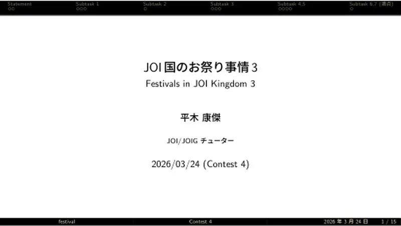
1Naslov; Hiraki Kosuke, tutor JOI/JOIG. -
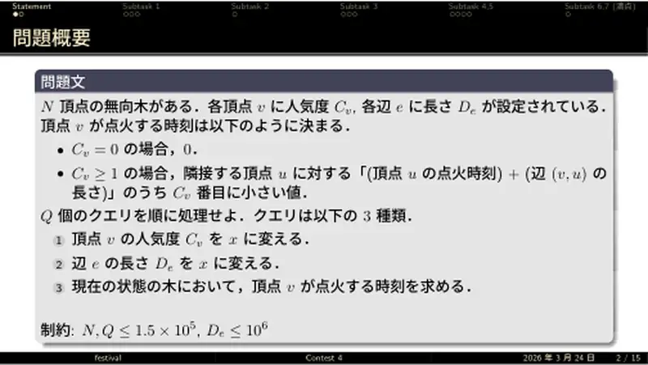
2Vrh pali u 0 ako $C_v=0$, inače u $C_v$-tom najmanjem od (vrijeme susjeda + duljina brida); upiti mijenjaju $C_v$, $D_e$ i pitaju vrijeme vrha. -
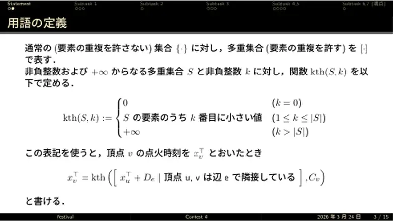
3$\mathrm{kth}(S,k)$: 0 za $k=0$, $k$-ti najmanji, $+\infty$ za $k\gt|S|$; $x^\top_v=\mathrm{kth}([x^\top_u+D_e],C_v)$.
← → tipke ili klik na sliku
Podzadatak 1 6 bodova
Koraci algoritma
Simulacija i lema
izvorni slajdovi 4–6
-
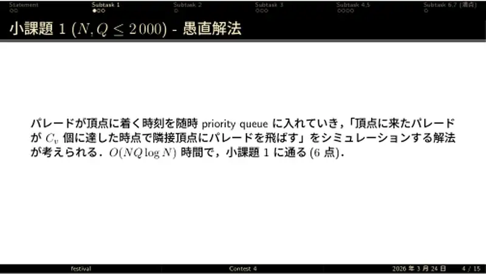
4Simulacija prioritetnim redom parada; $O(NQ\log N)$. -
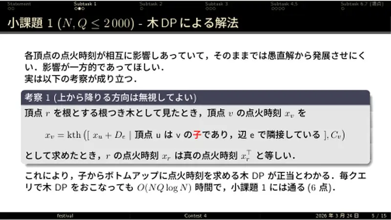
5Zapažanje 1: DP samo po djeci daje točno vrijeme korijena; DP po upitu, $O(NQ\log N)$. -
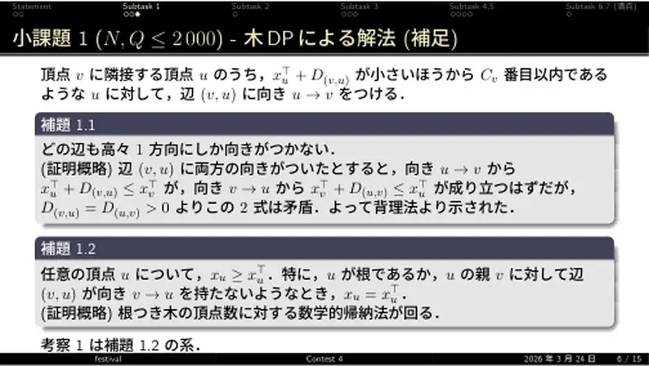
6Dokaz: usmjeri brid $u\to v$ ako je $u$ među prvih $C_v$; lema 1.1 — nema dvostrukog usmjerenja ($D\gt0$); lema 1.2 — $x_u\ge x^\top_u$ s jednakošću za korijen ili kad roditeljev brid nije usmjeren prema $u$; indukcija.
← → tipke ili klik na sliku
Podzadaci 2–3 27 bodova
Koraci algoritma
kth i monoid operatora
izvorni slajdovi 7–10
-
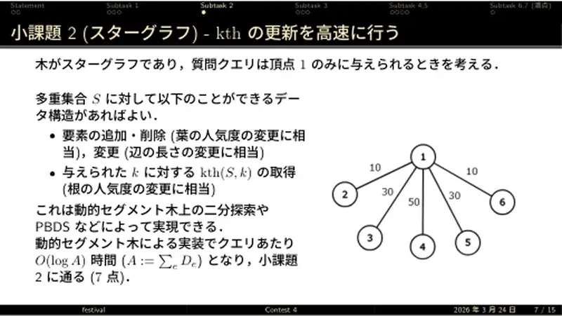
7Zvijezda: multiskup s dodavanjem/brisanjem/promjenom i kth — dinamičko segmentno stablo ili PBDS; $O(\log A)$, $A=\sum D$. -
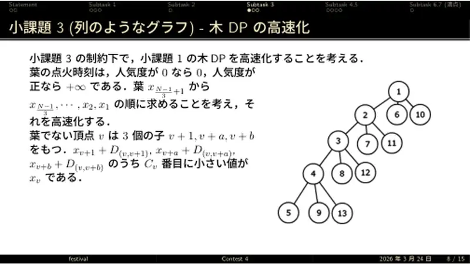
8Lanac: listovi imaju 0 ili $+\infty$; računaj $x$ od kraja lanca prema 1; $x_v$ = $C_v$-ti najmanji od tri doprinosa. -
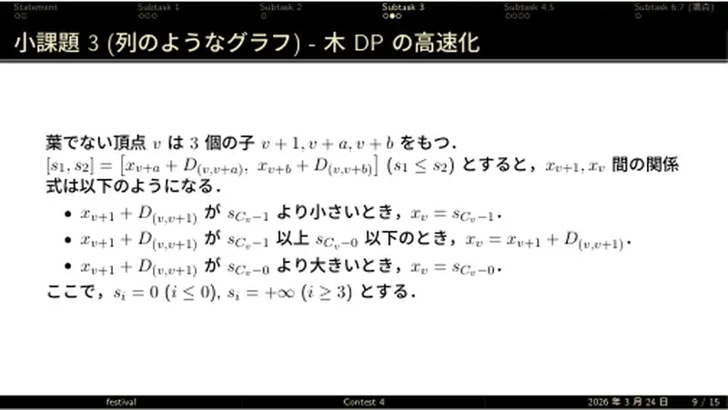
9Tri slučaja prema položaju $x_{v+1}+D$ u odnosu na $s_{C_v-1}$ i $s_{C_v}$. -
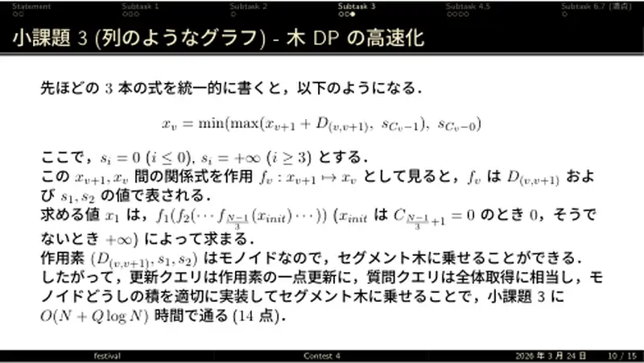
10Jedinstveno: $x_v=\min(\max(x_{v+1}+D,s_{C_v-1}),s_{C_v})$; operatori $(D,s_1,s_2)$ tvore monoid ⇒ segmentno stablo; $O(N+Q\log N)$.
← → tipke ili klik na sliku
Podzadaci 4–5 58 bodova
Koraci algoritma
HLD
izvorni slajdovi 11–14
-
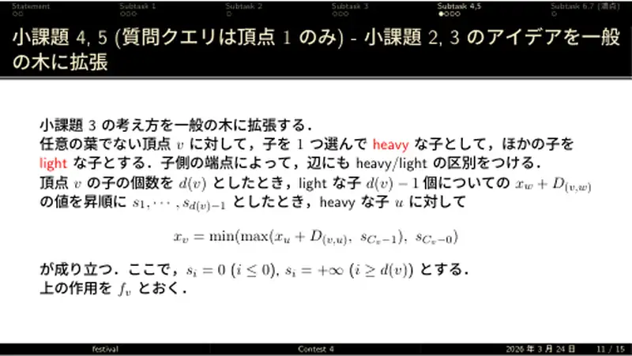
11Teško/lako dijete; $s_1..s_{d-1}$ doprinosi lakih; $x_v=\min(\max(x_u+D,s_{C-1}),s_C)$ za teško dijete $u$. -
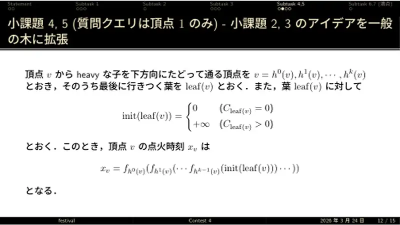
12$x_v=f_{h_0}(f_{h_1}(\cdots(\mathrm{init}(\mathrm{leaf}))))$ duž teškog puta. -
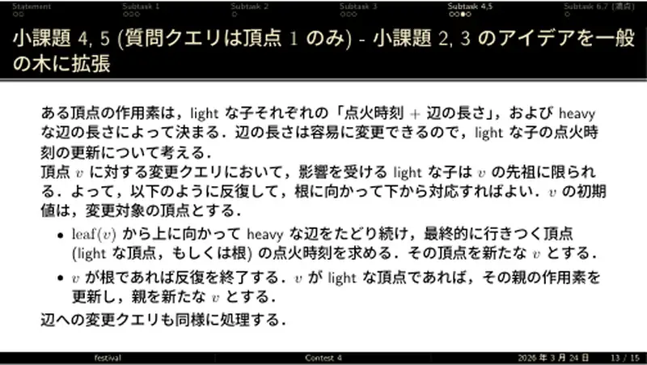
13Ažuriranje: prođi teški put do vrha, ako je lak ažuriraj roditeljev operator, ponavljaj do korijena. -
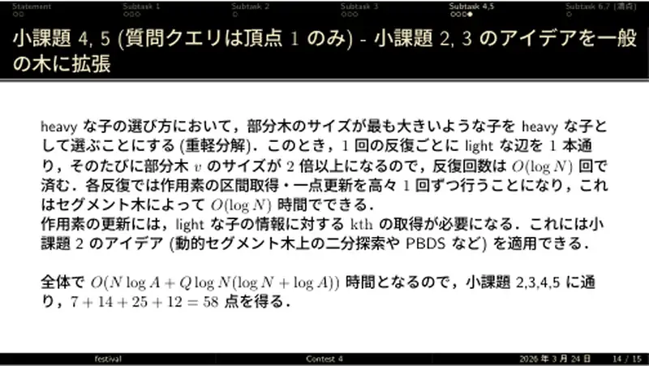
14Teško = najveće podstablo ⇒ $O(\log N)$ iteracija; kth lakih iz podzadatka 2; $O(N\log A+Q\log N(\log N+\log A))$; 58 bodova.
← → tipke ili klik na sliku
Puno rješenje 100 bodova
Slajd
Re-rooting na HLD-u
izvorni slajd 15
-
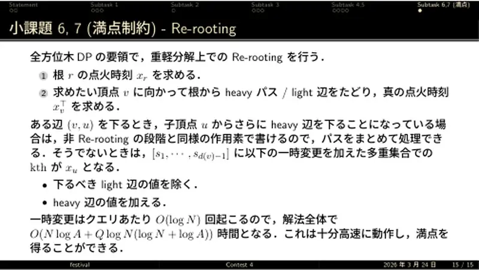
15Izračunaj $x_r$; spuštaj se prema $v$ teškim putovima/lakim bridovima računajući prava vremena; duž teškog puta isti oblik operatora ⇒ zbirno; na lakom bridu kth nad $[s_1..s_{d-1}]$ s privremenom izmjenom (izbaci laki brid kojim silaziš, dodaj teški); $O(\log N)$ izmjena po upitu.
Sažetak
- DP po djeci je točan za korijen; kth s jednom varijablom je clamp — monoid za segmentno stablo po HLD putovima.
- Ažuriranja penju lake bridove; upiti za proizvoljni vrh re-rootingom sa silaznim clampovima i privremenim kth.